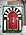

Culture de Madagascar
|
Cet article ou cette section doit être recyclé.
Une réorganisation et une clarification du contenu sont nécessaires. Discutez des points à améliorer en page de discussion.
|
|

|
Vous pouvez partager vos connaissances en l’améliorant (comment ?) selon les recommandations des projets correspondants.
|
{kind=link}
{kind=link}
Cet article concerne la culture de Madagascar.
Sommaire[masquer] |
Littérature[modifier]
- Jacques Rabemananjara, poète
- Jean Joseph Rabearivelo, écrivain poète
- Jean-Luc Raharimanana, écrivain
- Michèle Rakotoson, écrivain
- Clarisse Ratsifandrihamanana, poétesse et écrivain
- Emilson Daniel Andriamalala, écrivain poète
- Jean verdi Salomon Razakandrainy, écrivain poète
- Georges Andriamanantena, écrivain poète
- Celestin Andriamanantena, écrivain poète journaliste
- David Jaomanoro, écrivain
Médias[modifier]
En 2009, le classement mondial sur la liberté de la presse établi chaque année par Reporters sans frontières situe Madagascar au 134e rang sur 175 pays[1]. Des « problèmes sensibles » y ont été observés[2].
Cinéma[modifier]
- Raymond Rajaonarivelo, réalisateur
L'héritage audiovisuel et ses moyens de conservation[modifier]
Didier Mauro, chargé de mission de l’INA[http www.ina.fr] à Madagascar, à Antananarivo, prononça une conférence sur ce thème le 31 mai 2007 (rediffusée le même jour par les médias malgaches). D. Mauro prononça une communication sur le même thème fin août 2007, à La Réunion durant l'Université de la Communication de l'Océan Indien (U.C.O.I).
Musique[modifier]
- Abdou Day, auteur, compositeur, chanteur
- Justin Valli
- Mahaleo
- Erick Manana
- Régis Gizavo
- Jaojoby Eusèbe
- Les Surfs
- Njava
- Fanja Andriamanantena, auteur, compositeur, chanteuse
- Perline Razafiarisoa, chanteuse de hira gasy, décédée en 2007
- Hanitra Ranaivo
Artisanat d'Art[modifier]
{kind=link}
La broderie: Madagascar est célèbre pour ses nappes brodées
La marqueterie : Coffrets en bois marquetés La reliure
La rabanne : Construction d'objet en raphia
La tabletterie : Le travail de la corne et de la nacre appliqué aux bijoux, couverts, cornets à dés, pions de jeux, plumiers, étuis à lunettes… Les cornes immenses du zébu - animal emblématique de Madagascar- offrent une matière très fine d’une grande variété de couleurs allant du noir à l’ambre clair. Sa mise en œuvre par les tabletiers rappelle celle d‘une autre matière, issue d'une espèce protégée par la convention de Washington, l’écaille de tortue, encore utilisées mais qu'elle doit remplacer totalement. La nacre se trouve en abondance sur les côtes dans diverses espèces de coquillages parfois de grande dimensions.
La lapidairerie : le travail des pierres dures. Du saphir au marbre, en passant par les arbres fossilisés l’île regorge de merveilles géologiques. Les pierres semi-précieuses ( topaze, améthyste, aigue marine, grenat et tourmaline) et les «pierres fines » ou les tranches d’arbre fossile, les ammonites, peuvent être intégrées ala joaillerie et à certains objets.
La liste de l'artisanat d'art malgache ne peut être pas close sans citer la bijouterie (notamment le travail de l'or en filigrane dans le nord et l'ouest, la fonte d’aluminium qui après moulage et brossage se prête aux usages du bronze en décoration (ville d'Ambatolampy), l'épais papier Antaimoro qui inclut dans la pulpe naturelle fleurs et tiges disposées avec art, les tapis en mohait du grand sud et enfin les maquettes de bateaux (Antananarivo)).
Parce qu'il apporte des ressources indispensables aux artisans locaux, parce qu'il utilise des matières issues de l'exploitation de ressources durables, l'artisanat malgache est un atout pour ce pays. 15% des exportations malgaches sont représentées par l'artisanat pour un total de 44 milliards d'ariary (16 millions d'euros) en 2005. Le secteur est à 85% informel, selon l'Institut national de la statistique. Aussi il est urgent de renouveler leurs débouchés. L'artisanat malgache est peu mis en avant par le commerce international de la décoration, qui exige des centaines de pièces identiques. Seuls 1,5% des artisans exportent directement.
Notes[modifier]
- Reporters sans frontières : Classement mondial 2009 [1] [archive]
- Reporters sans frontières [2] [archive]
Voir aussi[modifier]
Bibliographie[modifier]
- dossier revue Enjeux océan indien, juillet 2006
- ouvrage de Pierre Randrianarisoa, Art et artisan malgache, 2e édition en 2003
- Robert Dubois, L'identité malgache : la tradition des Ancêtres (traduit du malgache par Marie-Bernard Rakotorahalahy), Karthala, Paris, 2002, 171 p. (ISBN 2-84586-298-9)
- Dominique Ranaivoson, Cent mots pour comprendre Madagascar, Maisonneuve et Larose, Paris, 2007, 111 p. (ISBN 978-2-7068-1944-5)
- Didier Mauro et Emeline Raholiarisoa, Madagascar : l'île essentielle : étude d'anthropologie culturelle, Anako, Fontenay-sous-Bois, 2000, 318 p. (ISBN 2-907754-55-6)
- Didier Mauro, Madagascar : guides culturels du monde, Éd. Pages du monde, Gérardmer, 2009, 253 p. (ISBN 978-2-915867-28-2)
Discographie[modifier]
- (en) The music of Madagascar : classic traditional recordings from the 1930s, Yazoo, 1995
- (en) Songs from Madagascar : chants malgaches, Sunset-France, distrib. Mélodie, 2005
- (fr) Madagascar : Antandroy, Antanosy, Bara, Betsileo, Betsimisaraka, Mahafaly, Merina, Sakalava (collec. Charles Duvelle), Universal Division Mercury, Antony, 1999
- (fr) Madagascar : accordéons et esprits ancestraux, Archives internationales de musique populaire, Musée d'ethnographie, Genève ; VDE-Gallo, Lausanne, 2001
- (fr) Madagascar : chants et musique traditionnelle du sud-ouest, Frémeaux & associés, Vincennes ; distrib. Night & day, 2005
- (fr) Les littératures des îles de l'océan Indien par Jean-Louis Joubert, (enregistrement lors de la rencontre Couleur saphir, no 91, du 27 février 2004), ARCC, Paris, 51'
Filmographie[modifier]
*« Savika » Madagascar 2009 (52’) FMC/RFO Archipels un film de Luc Bongrand
- «Polyphonies paysannes Betsileo »' (2000) 26’ (S.F.R.S ) /France 5
réalisation : Luc Bongrand. Auteurs : Luc Bongrand avec Victor Randrianary
- « Dadalira, mémoire des Antanala » (2000) 26’dv S.F.R./ France 5
réalisation : Luc Bongrand. Auteurs : Luc Bongrand avec Victor Randrianary
- « Solo le décodeur de la brousse » (99).11’Les Films du Village/Canal Plus
réalisation : Luc Bongrand. Auteurs : Luc Bongrand avec Victor Randrianary
- « Hiragasy théâtre africain »(99). 13’.S.F.R.S /France 5
réalisation : Luc Bongrand. Auteurs : Luc Bongrand avec Victor Randrianary
- « Nosy Hira : l’île-chant » (98). 26’ S.F.R.S/France 5 . Prix au festival art et pédagogie Paris 98-
réalisation : Luc Bongrand. Auteurs : Luc Bongrand avec Victor Randrianary
- « Remanindry, de la brousse à la scène »(97). 54’ les Films du Village/ FR3, TV5, RFO
réalisation : Luc Bongrand. Auteurs : Luc Bongrand avec Victor Randrianary
- Sur la piste des guérisseurs, film documentaire de Dominique Lenglard, SIIS Interimage, Arcueil, 1994, 26' (VHS)
- Ravao la potière, film documentaire d'Aimé Fournel, Cerimes, Vanves, 21' (DVD)
- Sambatra : la circoncision chez les Antambahoaka de Mananjary (Madagascar), film documentaire de Yves Rodrigue, 1995, 54' (DVD)
- Salegy : le rythme de Madagascar, film documentaire de Christophe Champclaux et Marie-Claude Lui Van Sheng, Ciné Horizon, Paris ; RFO Réunion, 2000, 54' (DVD)
- Exhumation, film documentaire d'Aimé Fournel, Cerimes, Vanves, 200.?, 9' (DVD)
- Madagascar, terre de missionnaires, film documentaire de Nadine Picard, Human Doors, Strasbourg, 2005, 50'
- Une ombre entre deux roues, film documentaire de Gaël Mocaër, ICTV, Paris, 2005, 52' (DVD)
- Rouge fanfare, film documentaire de Luc Bongrand, Centre de ressources et d'information sur les multimédias pour l'enseignement supérieur, Vanves, 2006, 52' (DVD)
- Les tromba de Zalifat, film documentaire de Raymond Arnaud, L'Harmattan vidéo, Paris, 2007, 45' (DVD)
- Rary, entre deux scènes, entre deux mondes, film documentaire de Raymond Arnaud, L'Harmattan vidéo, Paris, 2007, 80' (DVD)
- Le Sambatra de Mananjary, film documentaire de Raymond Arnaud, L'Harmattan, Paris, 2007, 45' (DVD)
- Nomades du lagon, film documentaire de Luc Bongrand, RFO, F.M.C, CERIMES, Vanves, 2008, 52' (DVD)
Liens externes[modifier]
- (en) Liste chronologique de films de Madagascar (IMDb)